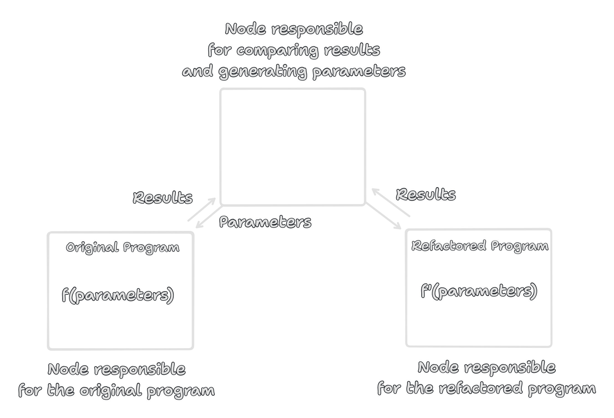

Bendeguz Seres
January 22, 2024
Inlining functions
f(X,Y) -> add(X,Y) / sub(X,Y). add(X,Y) -> X + Y. sub(X,Y) -> X - Y.
f(X,Y) -> (X + Y) / (X - Y).
Testing the functor law for list and map
prop_functor_id() -> ?FORALL(L, list(int()), lists:map(fun(X) -> X end , L) =:= L)
